| Nome | Atores principais | Episódios | Nota | Capa | |
|---|---|---|---|---|---|
| I'm not a robot | Chae Soo-bin | Yoo Seung Ho | 32 | ☆☆☆ | 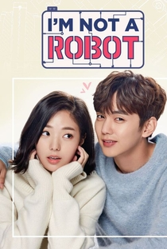 |
| Enquanto você dormia | Bae Suzy | Lee Jong Suk | 16 | ☆☆☆☆☆ | 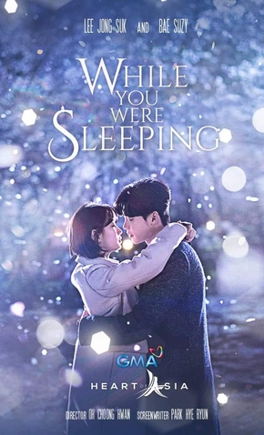 |
| Hwarang | Go Ara | Park Seo-joon | 20 | ☆ | 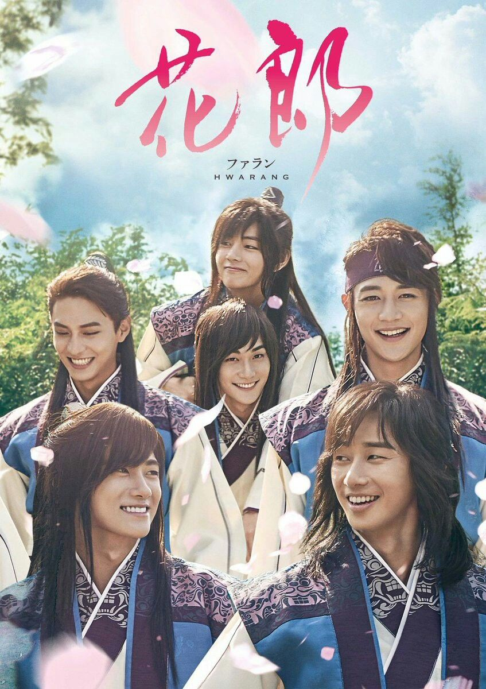 |
| W - Two Words | Han Hyo Joo | Lee Jong Suk | 17 | ☆☆ | 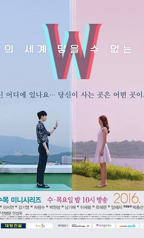 |
| Witch's love | Yoon So Hee | Hyun Woo | 12 | ☆☆☆ | 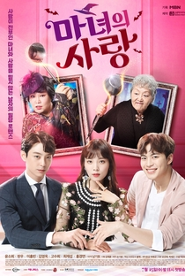 |
| What's wrong with secretary Kim? | Park Minyoung | Park Seo-joon | 16 | ☆☆☆☆ | 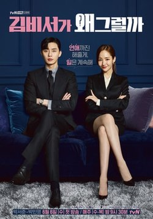 |
| Hotel Del Luna | IU | Yeo Jin Goo | 16 | ☆☆☆☆☆ | 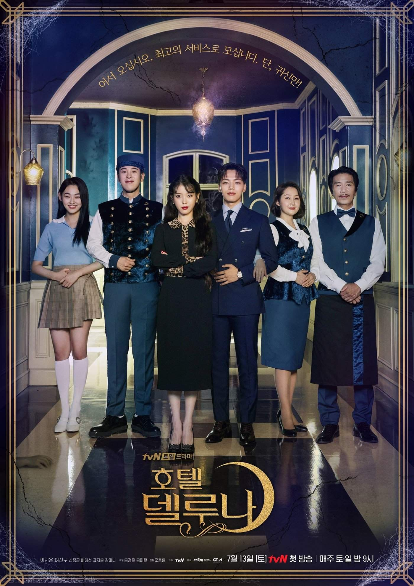 |
| Vagabond | Bae Suzy | Lee Seung-gi | 16 | ☆☆☆☆ | 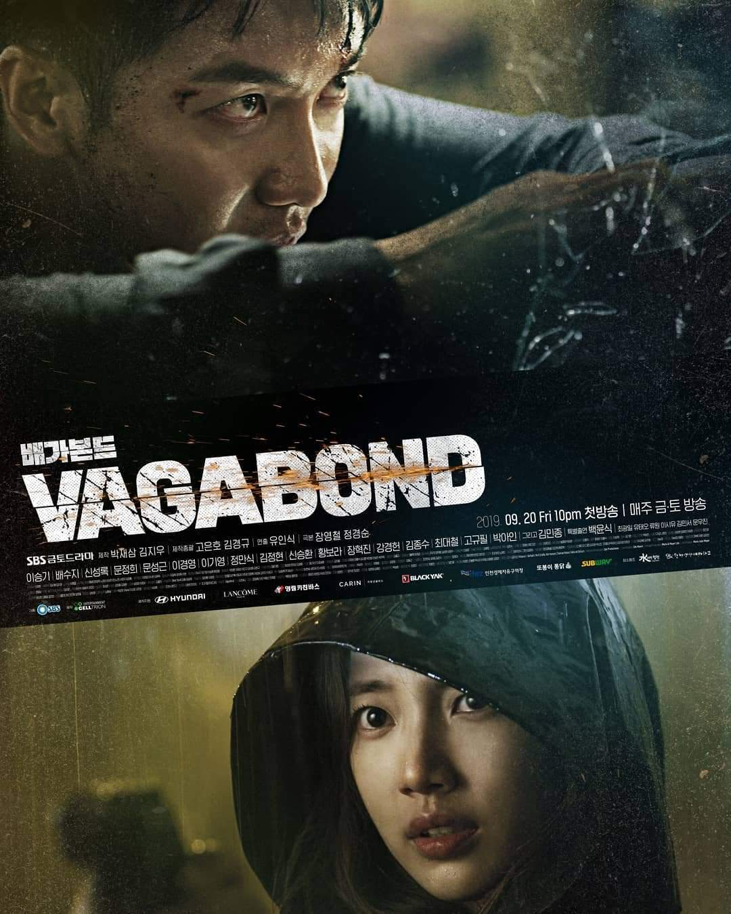 |
| Oh my ghostess | Park Bo Young | Jo Jung Suk | 16 | ☆☆☆ | 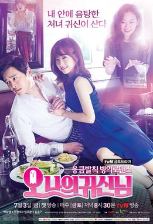 |
| Strong Woman Do Bong Soon | Park Bo-young | Park Hyung-sik | 16 | ☆☆☆☆ | 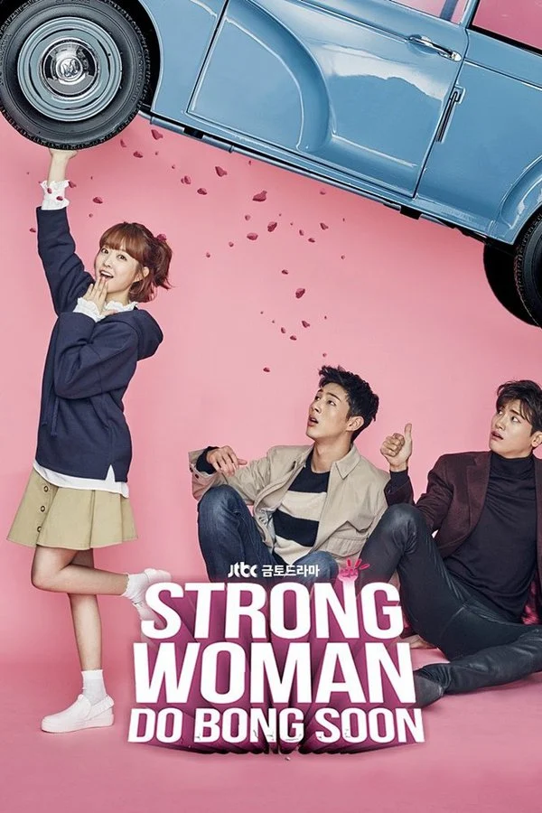 |
| Cinderella and Four Knights | Park So Dam | Jung Il Woo | 16 | ☆ | 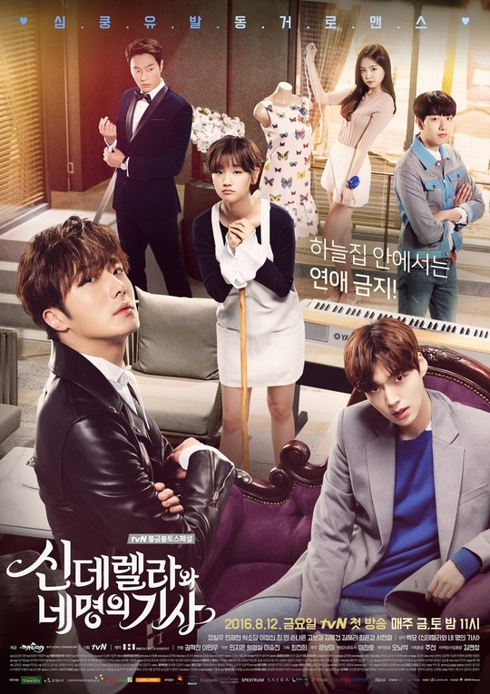 |
| It's okay to not be okay | Seo Ye-ji | Kim Soo-hyun | 16 | ☆☆☆☆☆ | 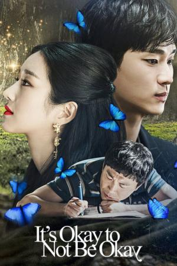 |
| Descendentes do Sol | Song Hye-kyo | Song Joong-ki | 16 | ☆☆☆☆ | 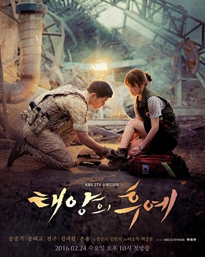 |
| Uma Odisseia Coreana | Cha Seoung-won | Lee Seung-gi | 20 | ☆☆☆ |  |
| Holo, my love | Ko Sung-hee | Yoon Hyun-min | 12 | ☆☆☆ | 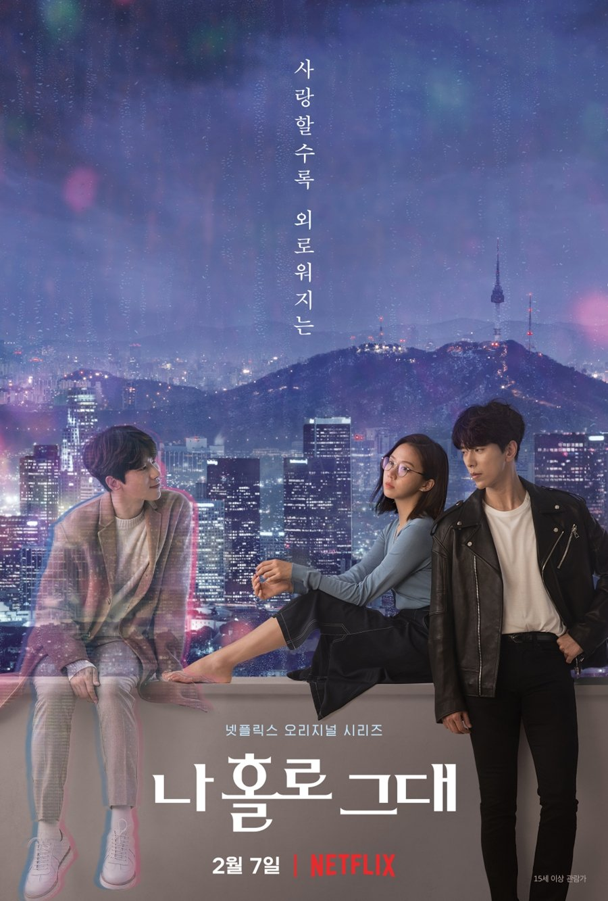 |
| Romance is a bonus book | Lee Na-young | Lee Jong-suk | 18 | ☆☆☆ | 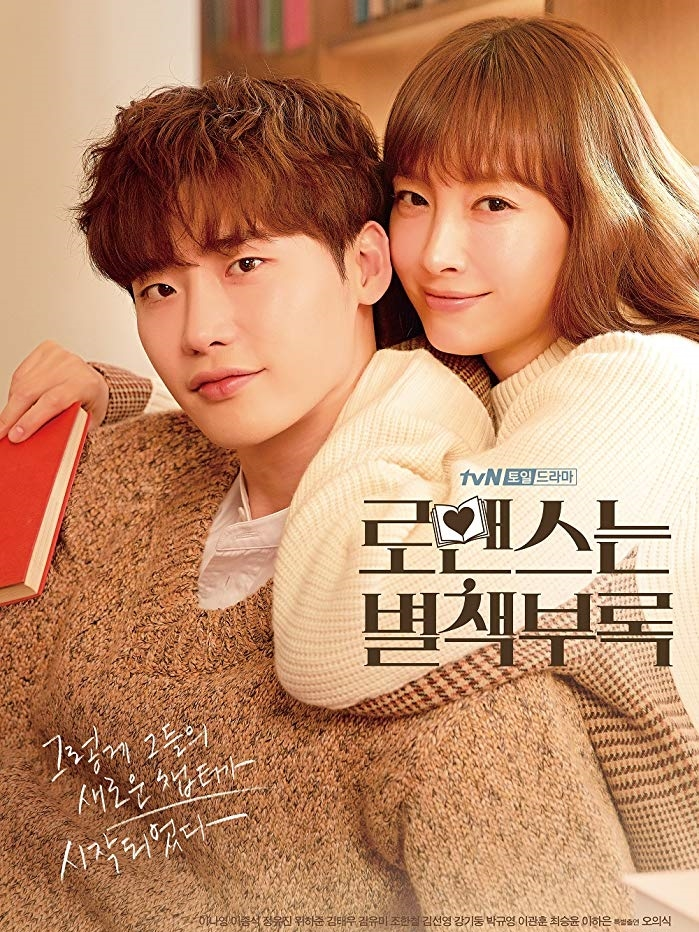 |
| A lenda do mar azul | Jun Ji-hyun | Lee Min-ho | 16 | ☆☆☆ | 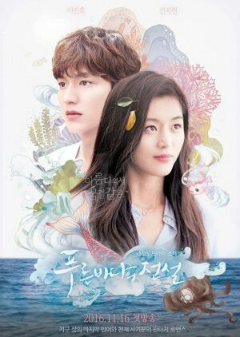 |
| Rei Eterno | Kim Go-eun | Lee Min-ho | 16 | ☆☆☆ | 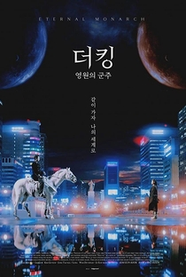 |
| Garota de fora | Chica Amatayakul | 21 | ☆☆ | 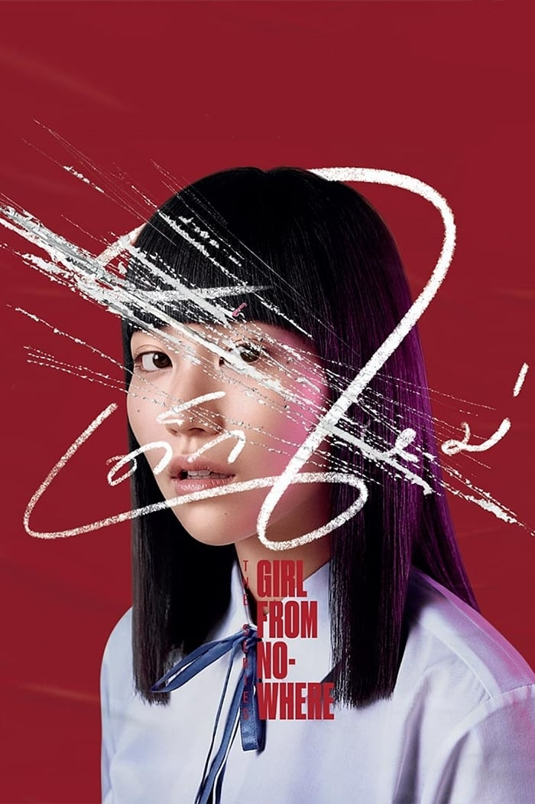 | |
| Vincenzo | Jeon Yeo-been | Song Joong-ki | 20 | ☆☆☆☆☆ |  |
| Alice in Borderland | Tao Tsuchiya | Kento Yamazaki | 8 | ☆☆ | 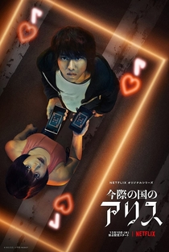 |
| Squid Game | Jung Ho-yeon | Lee Jung-jae | 9 | ☆☆☆ | 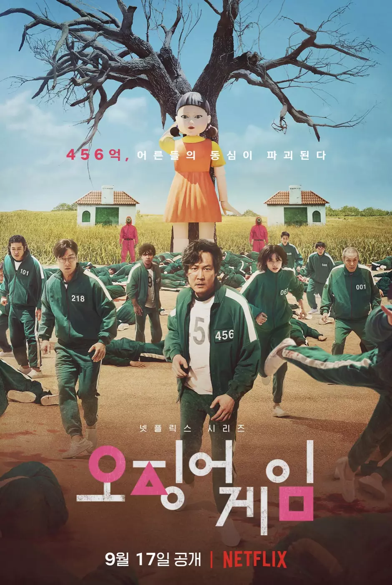 |
| Start-up | Bae Suzy | Nam Joo-hyuk | 16 | ☆☆ | 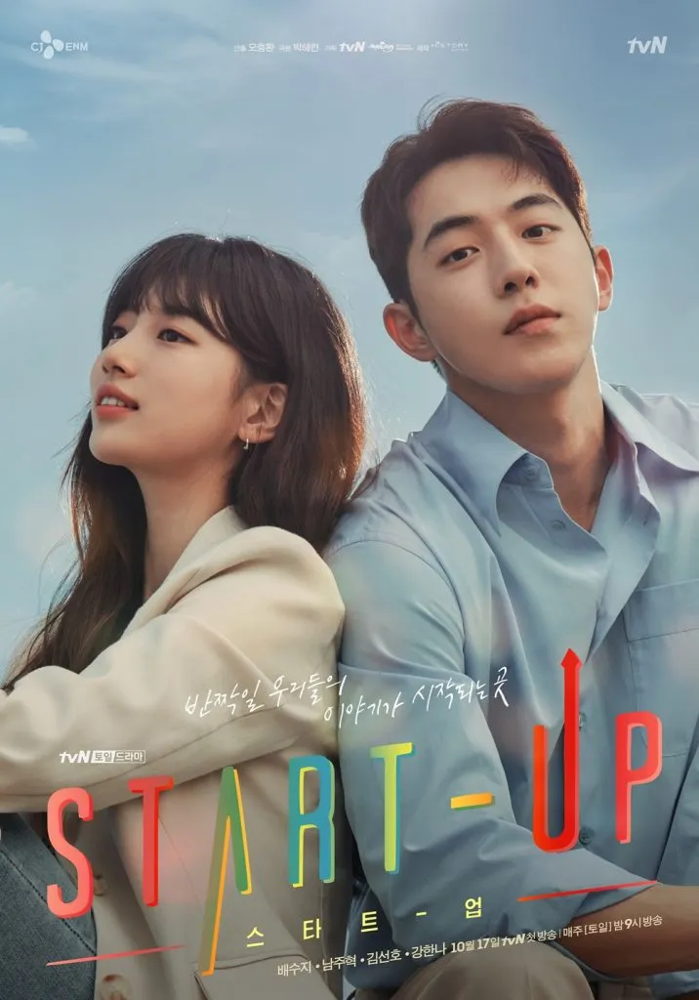 |
| Busted | Minyoung, Sejeong, Jongmin | Jaesuk, Sehun, Kwang-soo | 28 | ☆☆☆☆ | 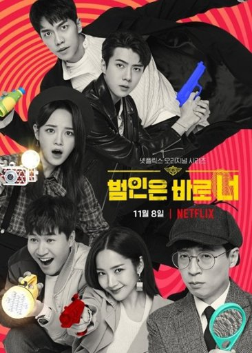 |
| Law School | Ryu Hye-young | Kim Bum | 16 | ☆☆☆ | 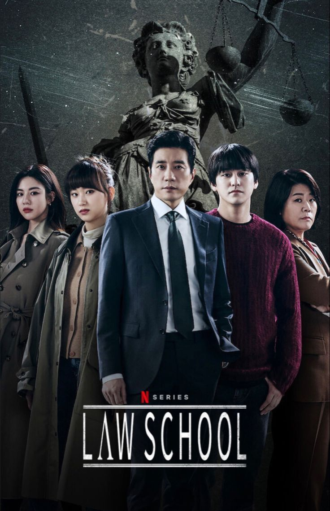 |
| Me tira daqui | Park Se-wan | Shin Hyun-Seung | 12 | ☆☆☆☆ | 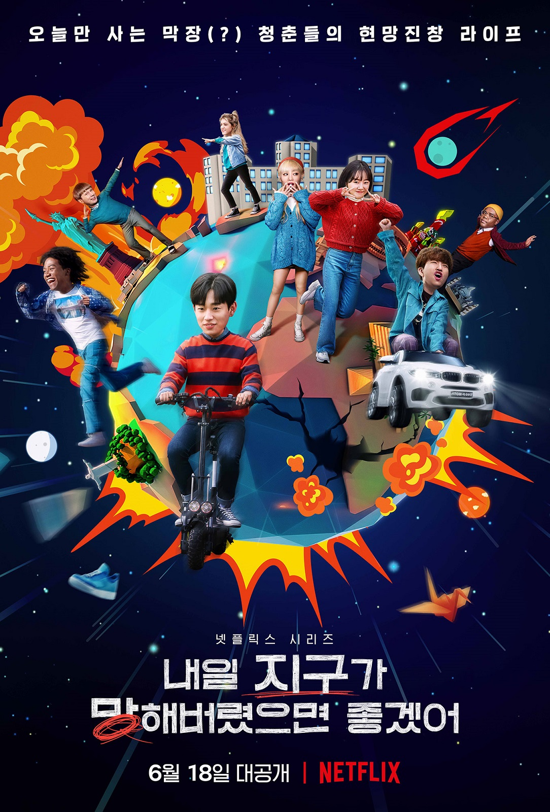 |
| Novo Mundo | Narae, Boah, Jiwon | Seungi, Heechul, Kai | 8 | ☆☆☆☆ | |
| Business Proposal | Kim Se-jeong | Ahn Hyo-seop | 12 | ☆☆☆☆☆ | 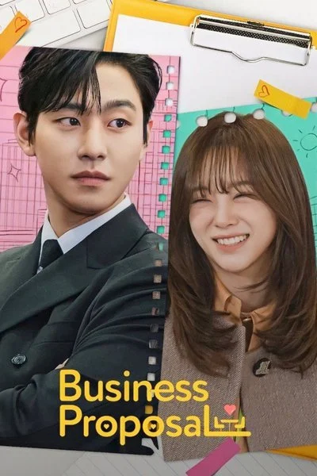 |